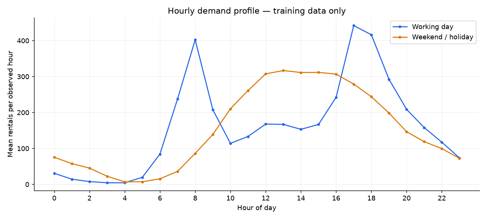
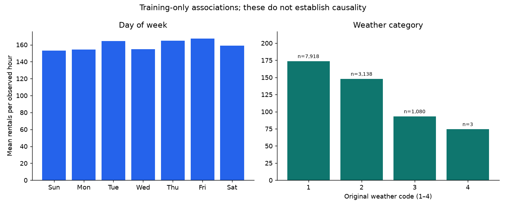

BIKE DEMAND · ЭТАП 2
Что мы узнали из данных
Почасовой спрос на Capital Bikeshare, Вашингтон, 2011–2012. Это анализ данных; модель ещё не обучалась.
1. Проверка исходного файла
17,379 строк · 731 дней · 17 столбцов. Пустых значений, повторных временных отметок, отрицательных счётчиков и расхождений cnt = casual + registered не найдено.
В полном временном диапазоне отсутствуют 165 часов. Причина не установлена. Не добавляем для них нулевой спрос. Метрики впоследствии будут относиться к наблюдаемым часам.
2. Честное разделение по времени
| Часть | Начало | Конец | Дней | Строк |
|---|
| train | 2011-01-01 | 2012-05-25 | 511 | 12139 |
| validation | 2012-05-26 | 2012-09-12 | 110 | 2640 |
| test | 2012-09-13 | 2012-12-31 | 110 | 2600 |
Границы определены по датам, без перемешивания. Все графики и статистика спроса ниже построены только на train. Target валидации и теста не исследуем. Сезонный состав частей различается — это ограничение одной временной проверки.
3. Спрос зависит от времени

В среднем по train наиболее загружен час 17:00: 390.8 аренд на наблюдаемый час. Рабочие и нерабочие дни имеют разные профили. Поэтому модель должна учитывать сочетание часа и типа дня.
Среднее по train: 159.7, медиана: 119, диапазон: 1–957 аренд/час. Одно постоянное число не описывает колебания спроса.
4. День недели и погода

| Код погоды | Часов в train | Среднее аренд/час |
|---|
| 1 | 7918 | 173.6 |
| 2 | 3138 | 147.8 |
| 3 | 1080 | 93.1 |
| 4 | 3 | 74.3 |
Коды: 1 — ясно / небольшая облачность; 2 — туман / облачность; 3 — небольшой дождь / снег; 4 — тяжёлые погодные условия, согласно исходному описанию.
Для кода 4 в train всего 3 наблюдений. По такой выборке нельзя делать устойчивые выводы. Средние по погоде также зависят от часа и сезона; они не доказывают причинное влияние.
5. Решения перед обучением
- Ответ — cnt. Исключаем casual и registered: их сумма уже равна ответу. Исключаем instant как порядковый номер.
- Базовое сравнение — средний спрос для часа недели, рассчитанный на train; при отсутствии группы — общее среднее train.
- Сравним Ridge и градиентный бустинг. Подбор — по validation MAE; финальный test оставляем на конец.
- Погода в исходных данных фактически наблюдалась. Сервис будет оценкой сценария с заданной погодой, а не проверенным прогнозом на завтра.
6. Ограничения и происхождение
Описание на текущей странице UCI и Readme.txt архива расходится: число строк на странице — 17 389, фактически — 17 379; также различаются описания season и нормализации temp/atemp. Пока сохраняем исходные коды и нормализованные величины, не переводим их в °C и не присваиваем сезонам подписи.
Данные исторические и агрегированы по системе. Прогноз доступности конкретной станции и применимость к современному городу здесь не проверяются.
Источник: UCI Bike Sharing · DOI: 10.24432/C5W894 · CC BY 4.0 по странице UCI. Автор: Hadi Fanaee-T (2013). Статья: Fanaee-T, H., Gama, J., DOI: 10.1007/s13748-013-0040-3.
Контрольные суммы файлов: reports/data_manifest.json. Числовые результаты: reports/eda_summary.json. Повторить: .venv\Scripts\python.exe scripts\analyze_data.py.